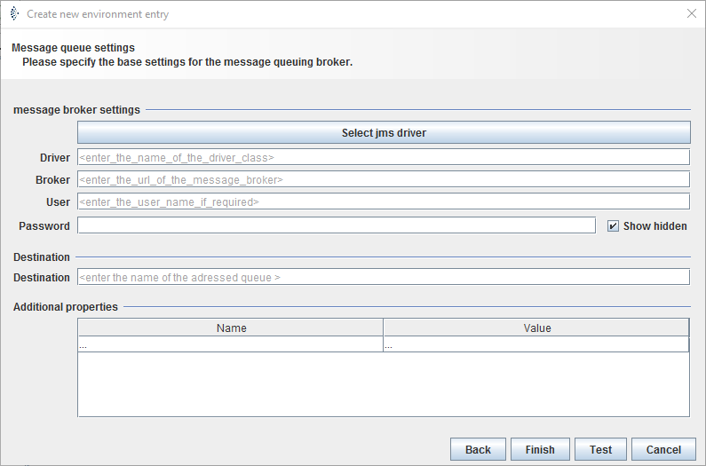

Message queue endpoint

Topic content
Description
Message queue endpoint Environment entries are used to declare the message endpoint of another application. They define the connection between Orchestra and an applications message endpoint to send or receive messages.
Purpose of object
It is e. g. used for channels Message Queue Sender and Message Queue Receiver to define the parameters of an applications message endpoint.
Configuration

Step by Step
1.Create an Environment entry of type message queue endpoint.
2.Click on button and choose the intended driver.
3.The field is filled automatically.
4.Replace all parameter in field marked by < > with the required information.
5.Enter and Password of the enpoint if necessary.
6.Enter the name of the adressed queue in the field.
7.Click : An alert window will appear, which shows whether the test of the connection was successful.
8.If the test was successful. Click on .